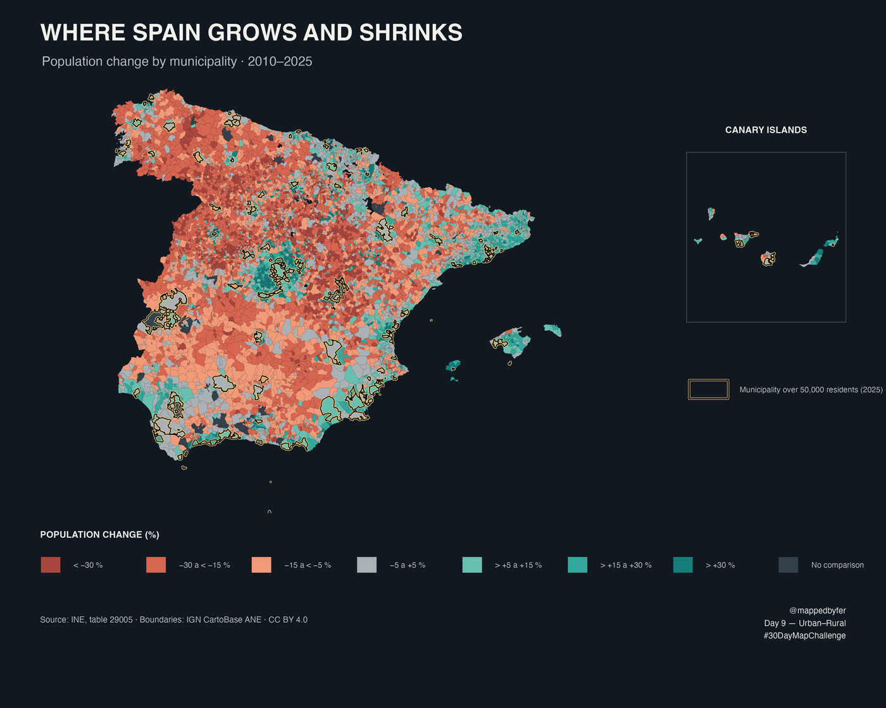

Where Spain Grows and Shrinks

Population change by municipality · 2010–2025
A diverging municipal map shows where population increased or declined between 1 January 2010 and 1 January 2025. Large municipalities are outlined to help locate urban centres within the national pattern.
The idea
The map compares official municipal population figures across fifteen years. Population change can help describe demographic geography, but it does not by itself classify a municipality as urban or rural.
How it was made
For each municipality with a reliable geographic comparison, percentage change is calculated as (2025 population − 2010 population) / 2010 population × 100. The map uses seven diverging classes. A black outline with a soft amber halo marks the 153 municipalities with more than 50,000 residents in 2025. Two verified municipal mergers were harmonised by summing predecessor populations; other cases with boundary changes or missing correspondence are left unclassified. In total, 8,046 municipalities are comparable and 86 are shown as not comparable.
Sources & limitations
Population: INE table 29005, official municipal population figures, as of 1 January 2010 and 2025. Boundaries: IGN CartoBase ANE via mapSpain, CC BY 4.0. The map shows population change, not its causes: it does not separate natural change from migration, and changes in municipal boundaries limit comparisons for some places.